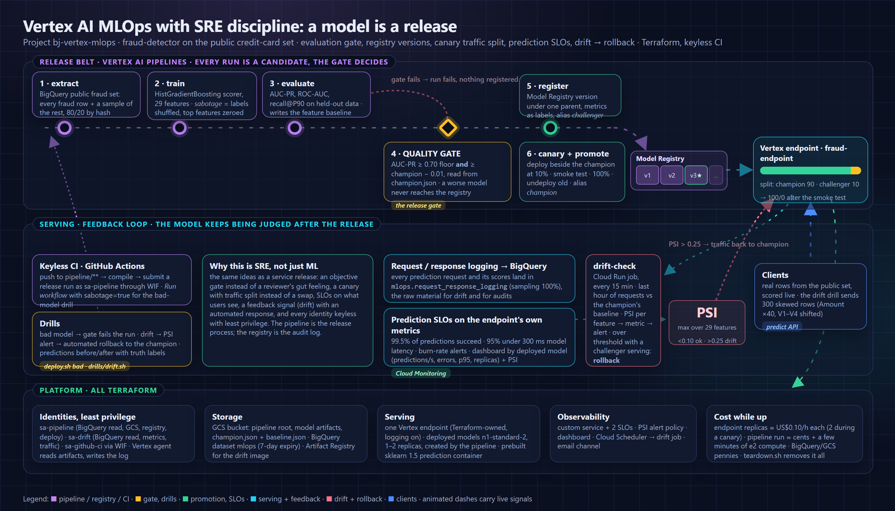

Google Cloud portfolio · project 7 of the series
A fraud-detection model shipped the way a service is shipped. A Vertex AI Pipeline trains and evaluates it, an objective gate decides whether it may exist in the registry, the new version goes out as a canary on one endpoint's traffic split, and after the release the model keeps being judged: prediction SLOs on the endpoint's own metrics, every request logged to BigQuery, a scheduled drift check that rolls traffic back to the champion on its own. Two drills prove it: a sabotaged model the gate refuses, and skewed traffic that triggers the rollback.
Narrated, against the live platform: the pipeline DAG in the console → a release run passing the gate and canary-deploying → the registry's versions → live predictions with truth labels → a sabotaged model stopped at the gate → skewed traffic, PSI, automated rollback → SLOs and dashboard → the keyless workflow.
Transcript: demo/transcript.md · Captions: demo/captions.srt. The pipeline runs and the drills in the video are real runs on the real project; the numbers below come from them.
Live diagram (the dashed lines animate): the release belt on top with the gate as the diamond, the serving and feedback loop in the middle, the Terraform platform underneath.

A Kubeflow Pipelines v2 definition in pipeline/pipeline.py, compiled and submitted by pipeline/submit.py (and by CI). Every run is a candidate; the gate decides.
HistGradientBoostingRegressor on the 0/1 label, used as a fraud scorer: its predict() returns a score in [0,1], so the prebuilt Vertex sklearn container serves probabilities without a custom prediction routine. sabotage=True shuffles a third of the labels and zeroes V14/V17/V12.auc_pr ≥ 0.70 and auc_pr ≥ champion.auc_pr − 0.01, the champion read from gs://…/champion.json. Fails the run with the reason; nothing is registered or deployed.fraud-detector parent model, metrics as labels, alias challenger, the artifact URI pointing at the pipeline's own output.champion, publish champion.json and baseline.json. With auto_promote=False the challenger stays at 10% for the drift drill.The endpoint writes every request and its scores to mlops.request_response_logging (100% sampling, 7-day expiry): the raw material for drift, debugging and audits.
A Cloud Run job every 15 minutes (and on demand): the last hour of logged requests, binned with the champion's baseline, Population Stability Index per feature, ml/psi_max and ml/psi_feature as custom metrics. Above 0.25 an alert fires and, if a challenger is serving, traffic goes back to the champion's deployed model.
On the endpoint's own metrics: 99.5% of predictions succeed (prediction_count vs error_count) and 95% under 300 ms model latency (prediction_latencies), 28-day rolling, fast-burn alerts.
Predictions/s, errors/s, p95 and replicas by deployed model, PSI max and PSI by feature: a canary and a rollback are both visible as traffic moving between two series.
GitHub Actions compiles the pipeline on every push to pipeline/** and submits a release run as sa-pipeline through Workload Identity Federation; Run workflow with sabotage=true ships the bad model on purpose.
An objective gate instead of a reviewer's gut feeling; a canary with a traffic split instead of a swap; SLOs on what users see; a feedback signal with an automated response; every identity keyless and least-privilege. The pipeline is the release process and the registry is the audit log.
| Drill | Command | Expected |
|---|---|---|
| Bad model | ./deploy.sh bad | evaluate reports a collapsed AUC-PR; the gate step fails with the reason; the run is red; registry and endpoint untouched |
| Drift → rollback | ./deploy.sh release --no-promote, then drills/drift.sh | 300 skewed requests (Amount ×40, V1–V4 shifted); PSI max far above 0.25; ROLLED BACK, champion at 100%; the PSI alert fires |
| Live predictions | drills/predict.sh 5 | scores with truth labels, the serving version and latency |
| Measurement | Value | Notes |
|---|---|---|
| Champion v1 | V1_ROW | extract → train → evaluate → gate (no champion yet: floor only) → register → deploy 100% |
| Release v2 (canary) | V2_ROW | gate against v1, canary 10% beside v1, smoke through the endpoint, promote |
| Bad model | BAD_ROW | labels shuffled, V14/V17/V12 zeroed; the gate's reason string is the run's error |
| Drift drill | DRIFT_ROW | PSI per feature over the last hour of logged requests; rollback executed by the job |
| Prediction latency | LAT_ROW | through the predict API from India; model latency on the endpoint is a fraction of that |
~25 minutes to a serving endpoint (the first pipeline run is most of it), ~US$0.10–0.20/hour while up, one script to remove it. Full detail and the gotchas in REBUILD.md.
git clone https://github.com/bhavishyajain545/gcp-vertex-mlops-sre && cd gcp-vertex-mlops-sre
$EDITOR terraform/terraform.tfvars # project_id, github_repo, alert_email
./deploy.sh # terraform → drift image → terraform → first release (champion v1)
./deploy.sh release ; ./deploy.sh bad # a canary release; the gate refusing a sabotaged model
./deploy.sh release --no-promote && drills/drift.sh # challenger at 10%, skewed traffic, PSI, rollback
./teardown.sh # undeploy → destroy → auditFor a classifier that returns hard classes. A gradient-boosting regressor on the 0/1 label serves a probability-like score through the same container, no custom prediction routine, no custom image.
The registry has aliases but no notion of "the current champion's metrics". The gate reads champion.json from GCS and the promote step writes it together with the alias change, so the gate never compares against a half-promoted version.
An alert policy on custom.googleapis.com/ml/psi_max fails with 404 until the metric has been written once. Declaring the metric descriptors in Terraform makes the first apply deterministic.
A component that returns a value and writes artifacts exposes the return as task.outputs["Output"]; task.output raises "multiple outputs".
The pipeline deploys and undeploys; Terraform owns the endpoint around them. Teardown undeploys first or the endpoint cannot be deleted.
A billing account links five projects by default; the sixth project of the series needed an earlier, torn-down one unlinked first.